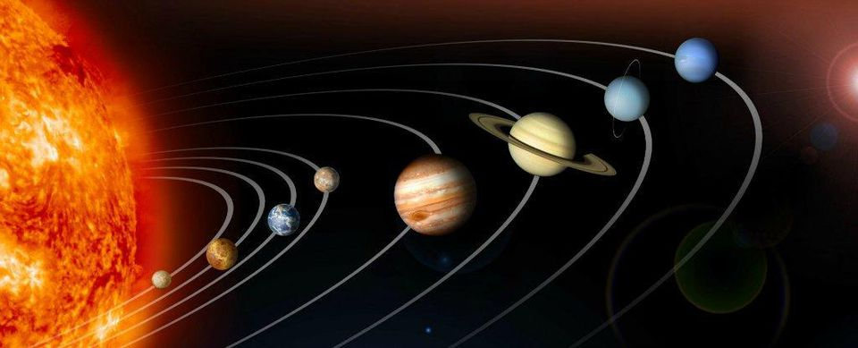
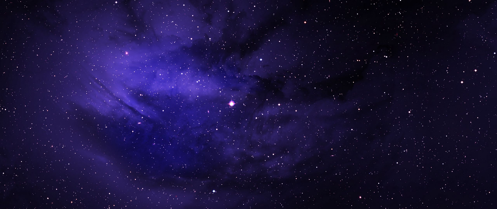

Planets of solar system

Stars

- A star is an astronomical object consisting of a luminous spheroid
of plasma held together by its own gravity. The nearest star to Earth
is the Sun. Many other stars are visible to the naked eye from Earth
during the night, appearing as a multitude of fixed luminous points
in the sky due to their immense distance from Earth. Historically,
the most prominent stars were grouped into constellations and asterisms,
the brightest of which gained proper names. Astronomers have assembled
star catalogues that identify the known stars and provide standardized
stellar designations. The observable Universe contains an estimated 1×1024
stars,[1][2] but most are invisible to the naked eye from Earth,
including all stars outside our galaxy, the Milky Way.